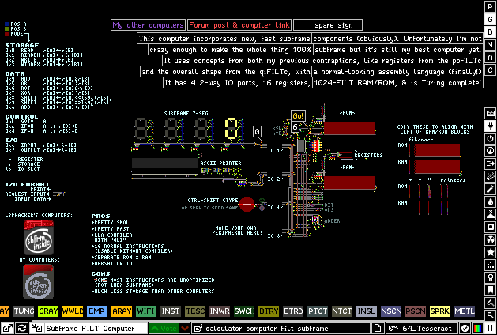
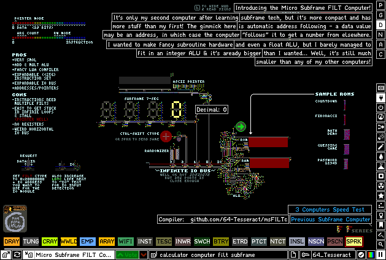
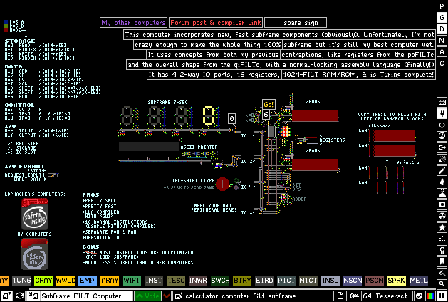
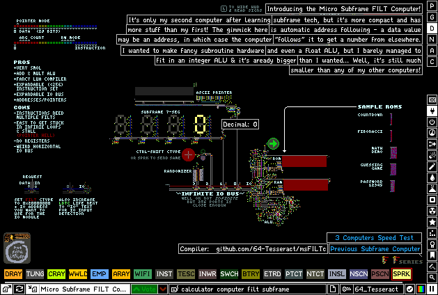

My Smaller Projects
I usually program random things for fun, and usually they don't grow to become completed games or tools. If, however, I end up half-completing a project that's cool or useful, I'll put it here!
2D Raycaster 
Inspired by the first FPS games, such as Wolfenstein 3D and Doom, I present: a terminal-based non-Euclidean maze exploring simulator, proudly written in C!
Players can move a character by holding one of the WASD keys, and turn with J and L. You can venture through character-based hallways looking for poorly-anti-aliased items and getting lost in looping rooms. It's got customizable speed, FOV between 0 and 360 degrees, and decent wall collision detection. There's even a fancy head bob!
Of course, it's not perfect - what could you expect from my second C project? The rendering can flicker sometimes, whether it's from the rendering thread being slow or rays moving through portals weirdly; and it's a pain to use, since maps are read from .txt files and ncurses isn't great with key holding... but for a proof-of-concept, it's a pretty cool gimmick, I think.
Downloads
Noise Background 
For a long time, I was struggling to find a nice wallpaper for my phone. There were a few patterns I took a liking to, but I wasn't 100% happy with any of the apps I found. After discovering APDE - a Processing port for Android - so I decided to take the opportunity and come up with my own unique pattern.
At the time I was into pixel art, so after experimenting with Perlin noise, I ended up with a kind-of "flowing lava/energy" look. Unfortunately, my code was unorganized and confusing, so I couldn't upload it for others.
It was only a year later that I decided I should publish it, so I completely rewrote the code in a more presentable way. It uses the data/layers.json file to get information on layers, where each layer's HSBA channels have their own Perlin noise pattern. This lets users create detailed, nice-looking patterns without having to clumsily edit the source code.

The nc Suite
These are probably my more practical projects - a 2FA authenticator and Todo list - but of course I had to make it interesting for myself, so I made them run in the terminal.
My main inspiration for this was the PinePhone running SXMO, which is basically the product if a Bash scripter tried to make a mobile frontend. Most if not all of its functionality is accessible from the terminal, and seeing how little software is out there gave me a bit of motivation.
Frontends for Linux phones are still very unpolished and the backends unoptimized, so I needed to make something that would be easy to use on a suboptimal display in a lightweight language... What better combination than C & ncurses?
ncAuth is a semi-scriptable authenticator that you can also use on a Linux desktop. There's a keybind in the GUI to run a script on the selected auth code, so you can for example copy it to your clipboard, or you can write a script to grab a specific code from the CLI.
ncTodo is a less-scriptable Todo list with a focus on categories and subtasks - you can create tasks "under" another one, and parent tasks will average the completion ratio of all its subtasks so you can easily see how complete your projects are.
The Powder Toy Computers
The Powder Toy is the legendary sandbox game in which players can create all sorts of things, anywhere from nukes to electronics. I made some functional computers, and though it's not strictly a "programming" project, I still think it fits here. Electronics in TPT follow a set of simple rules, and realizing I knew how to use most of these mechanics, I decided to challenge myself to create a computer-like machine.
Thus was born the Brainf*** Interpreter - using large cells to keep track of numbers and a clunky machine to move between them, this computer could handle basic IO, addition/subtraction, and nested loops... But it had a horribly slow speed and amazingly poor accuracy with everything it did.
TPT also has a mechanic where binary numbers (up to 30 bits) may be sent via filters and ray emitters. After learning it, I ended up with a huge, poorly organized mess that could perform numerical operations. It also had a compact filter-based memory, though it was still slow compared to what I would've liked... Not to mention the weird assembly language.
After this, I made a computer based off a theoretical minimal CPU instruction set. This one took up much less space, and was surprisingly a bit faster, however due to its nature it lacked many features to be useful. It also had a joint RAM/ROM, so it was easy to corrupt programs.
The next clear step for me was to create a computer with "subframe" technology, which exploits the update order of particles to create incredibly fast mechanisms. After doing some research, I've developed a computer that utilizes some aspects from my previous work, such as registers and a style of assembly, resulting in something that's smaller, faster, and easier to code for. Most components complete their operations in under 12 frames, since I wasn't experienced enough to make everything subframe, but it still ended up being fast.
Yet, I was still not satisfied with its speed. I ended up making a 4th computer, the speed & tiny size of which even surprised me. It followed a similar hardware design to the last computer, but technically it was much more advanced, boasting hundreds of potential instructions & IO modules. Its assembly language also put my last computer's to shame, with automatic constant variables & even data pointers, shoddy though they may be. Slowly but surely, I am nearing the apex of TPT computing - a 60Hz computer, completing one instruction per frame.
By the way, I also made compilers in Lua for all of my computers that manage GOTO tags and automatically encode filter pixels.


 


